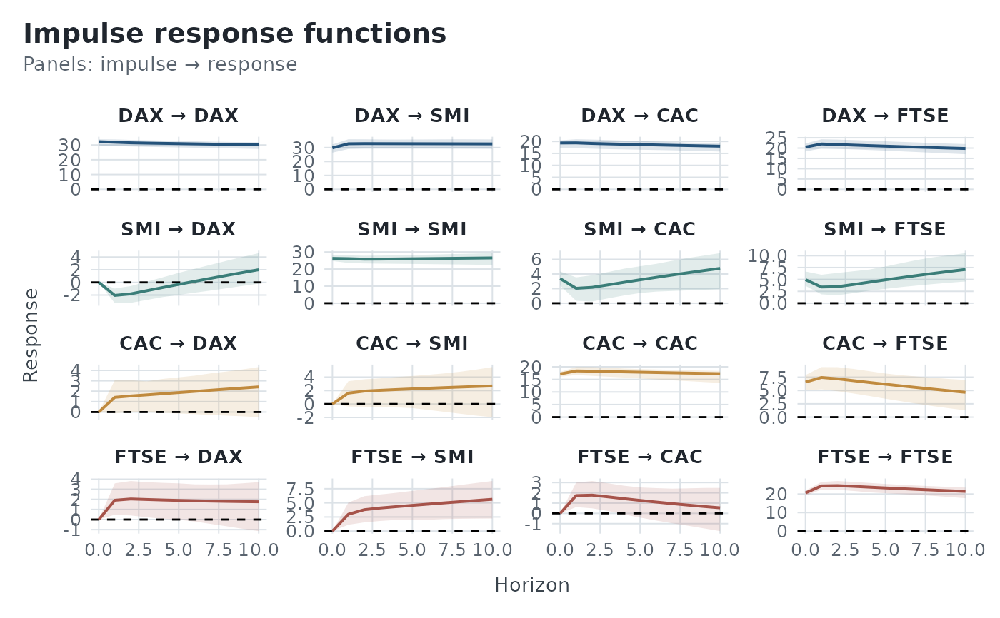
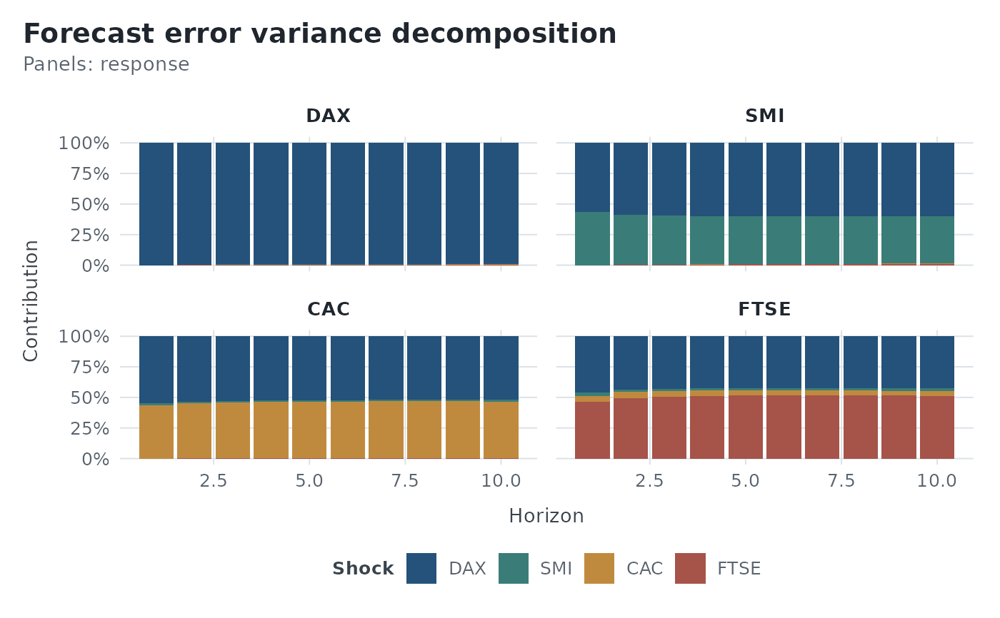

Apply the tidyvars colour identity to a ggplot.
Details
`palette_tidyvars()` complements [theme_tidyvars()] by applying the tidyvars colour system to the data layers of a plot.
For plots produced by tidyvars, the palette uses the natural categorical dimension of each visualization:
* impulse response functions are coloured by impulse; * forecasts are coloured by variable; * forecast error variance decompositions are filled by shock.
The function is entirely optional. Plots produced by tidyvars retain their standard ggplot2 colours unless `palette_tidyvars()` is explicitly added.
Examples
library(ggplot2)
model <- vars::VAR(
EuStockMarkets,
p = 2
)
autoplot(tv_irf(model), layout = "wrap") +
theme_tidyvars() +
palette_tidyvars()

autoplot(tv_fevd(model)) +
theme_tidyvars() +
palette_tidyvars()
